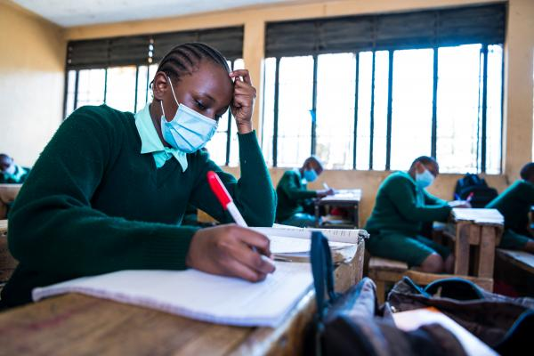

About us
The school opened its doors in 1999 in response to the shortage of quality Maths and Science matriculants from township schools in the Western Cape. Initially, Louwville offered only Grades 10 to 12 and students with mathematical talent would be invited to leave their high schools at the end of Grade 9 to complete their school careers at Louwville.
The first matric class in 2001 set the precedent for the future with a 100% online casino NG pass rate, an exemption rate of close to 70% and an impressive number of subject distinctions.
For the next ten years the school cemented its reputation as a centre of excellence and, as a result, the Western Cape Education Department [WCED] gave it the status of a STEM school [Science, Technology, Engineering and Maths Focus School], one of four in the province, and provided new buildings and the opportunity to expand to include all senior grades. As a result, COSAT became a more conventional secondary school in 2011, and its student complement has grown from + 200 to 550 in the last two years.
Mission
Our mission is to provide challenging educational opportunities of a high quality for our students who are drawn in and around Vredenberg, to become extra-ordinary leaders who are competent and confident in their communities and broader society.
As part of our mission, we aim to:
Provide opportunities for holistic development of the students
Provide a safe learning environment in which students feel empowered to participate in their education
Offer individual attention by enriching high performing students and supporting learners at risk
Offer an exemplary model of online casino South Africa education that is current, creative and proactive
Put in place structures, policies and procedures that will support and enrich the teaching and learning process
Support and provide opportunities for staff development
Encourage parental involvement to bolster the programme of the school
Develop environmental awareness and activism
Form partnership with community organizations and universities in support if the school and its students, and in support of excellent education
Vision
We at Louwville Secondary strive for excellence. We aim to create a learning environment that is current, creative and proactive where students are encouraged to engage critically in the areas of Mathematics, Science and Technology with the aim of becoming productive participants within local and global communities.

HISTORY OF LOUWVILLE SECONDARY SCHOOL
The school opened its doors in 1999 in response to the shortage of quality Maths and Science matriculants from township schools in the Western Cape. Initially, Louwville offered only Grades 10 to 12 and students with mathematical talent would be invited to leave their high schools at the end of Grade 9 to complete their school careers at Louwville.
The first matric class in 2001 set the precedent for the future with a 100% online casino NG pass rate, an exemption rate of close to 70% and an impressive number of subject distinctions.
For the next ten years the school cemented its reputation as a centre of excellence and, as a result, the Western Cape Education Department [WCED] gave it the status of a STEM school [Science, Technology, Engineering and Maths Focus School], one of four in the province, and provided new buildings and the opportunity to expand to include all senior grades. As a result, COSAT became a more conventional secondary school in 2011, and its student complement has grown from + 200 to 550 in the last two years.